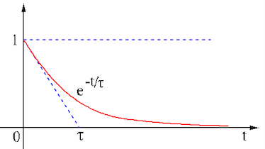

Consider an RC circuit consisted of a resistor and a capacitor in series
connected to an AC voltage source
, find the voltage
 across
across  . The governing DE describing the circuit can be obtained
based on KVL:
. The governing DE describing the circuit can be obtained
based on KVL:
When the external input is zero , the DE is homogeneous (zero
on the right-hand side):
The non-trivial solution of this homogeneous equation is due to some
non-zero initial value, the voltage
 across the capacitor
before
across the capacitor
before  . The homogeneous solution needs to be a function whose
derivative takes the same form as the function itself, an exponential
function:
Substituting them into the DE, we get
As we are not interested in the trivial solution , we must
have
Now we get
for . The constant coefficient
. The homogeneous solution needs to be a function whose
derivative takes the same form as the function itself, an exponential
function:
Substituting them into the DE, we get
As we are not interested in the trivial solution , we must
have
Now we get
for . The constant coefficient
 can be obtained by the initial condition
can be obtained by the initial condition
 :
Now the homogeneous solution is found to be
which decays to zero as
:
Now the homogeneous solution is found to be
which decays to zero as
 :
The same result can also be obtained by the
Laplace transform method.
:
The same result can also be obtained by the
Laplace transform method.
The current through  and is
and is
The voltage across is
This result can be verified by KVL:
.
The time constant  can be identified on the time plot of the general
first order response
with
can be identified on the time plot of the general
first order response
with  . Specifically
consider the derivative of
. Specifically
consider the derivative of  evaluated at :
evaluated at :
This is the slope of the tangent line of at , and is its
intersection with the horizontal axis.
